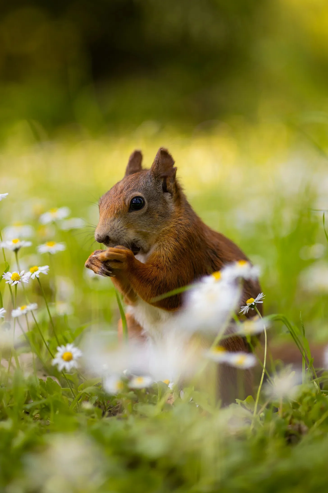

다람쥐는 작고 귀여운 동물입니다. 숲 속에 살며 나무를 잘 타고 올라갑니다. 꼬리는 크고 복슬복슬합니다.
(The squirrel is a small and cute animal. It lives in the forest and climbs trees well. Its tail is big and fluffy.)
꽃은 아름답고 향기로운 식물입니다. 꽃은 여러 가지 색깔을 가지고 있습니다.
(A flower is a beautiful and fragrant plant. flowers have various colors.)
다람쥐는 꽃밭을 걷고 있습니다. 꽃밭에는 하얀 꽃들이 가득합니다. 다람쥐는 꽃들을 보고 멈춥니다. 다람쥐는 꽃을 냄새 맡고 맛을 봅니다. 다람쥐는 꽃을 좋아합니다.
(The squirrel is walking through a flower garden. The flower garden is full of white flowers. The squirrel stops when it sees the flowers. The squirrel smells and tastes the flowers. The squirrel likes the flowers.)
다람쥐는 꽃밭에서 행복한 시간을 보냅니다. 다람쥐는 꽃을 먹고 뛰어놀고 잠을 잡니다. 다람쥐는 꽃밭에서 즐겁게 삽니다.
(The squirrel has a happy time in the flower garden. The squirrel eats, plays, and sleeps in the flowers. The squirrel lives happily in the flower garden.)

자동차는 네 개의 바퀴를 가진 차량입니다. 사람들은 자동차를 타고 먼 곳으로 이동합니다. 자동차는 다양한 색깔과 모양을 가지고 있습니다.
(A car is a vehicle with four wheels. People ride in cars to travel long distances. Cars come in various colors and shapes.)
들판은 넓고 푸른 땅입니다. 들판에는 풀과 꽃들이 자랍니다. 들판은 농부들이 곡식을 심는 곳이기도 합니다.
(A field is a wide and green land. Grass and flowers grow in the field. The field is also where farmers plant crops.)
하얀 자동차 한 대가 들판에 서 있습니다. 자동차 위에는 짐을 싣는 짐칸이 있습니다. 짐칸에는 여행 가방이 놓여 있습니다. 자동차 주변에는 푸른 풀들이 바람에 흔들리고 있습니다.
(A white car is standing in the field. There is a roof rack on top of the car for carrying luggage. A suitcase is placed on the roof rack. Green grass is swaying in the wind around the car.)
자동차는 들판 한가운데 멈춰 서서 주변 풍경을 감상하고 있습니다. 자동차는 곧 다시 움직여 여행을 계속할 것입니다. 자동차는 들판을 지나 넓은 세상으로 나아갑니다.
(The car is stopped in the middle of the field, enjoying the surrounding scenery. The car will soon move again and continue its journey. The car passes through the field and goes out into the wide world.)

저 멀리 큰 건물들이 우뚝 솟아 있습니다.
(Tall buildings rise up in the distance.)
건물은 큽니다.
(The building is big.)
건물은 높습니다.
(The building is tall.)
건물은 유리로 되어 있습니다.
(The building is made of glass.)
유리는 빛을 반사합니다.
(The glass reflects the light.)
도로에는 빨간 버스가 달리고 있습니다.
(A red bus is running on the road.)
버스는 큽니다.
(The bus is big.)
버스는 빨갛습니다.
(The bus is red.)
버스는 사람들을 태우고 있습니다.
(The bus is carrying people.)
사람들은 버스를 타고 어디론가 갑니다.
(People go somewhere by bus.)
버스 옆에는 자전거를 탄 사람이 있습니다.
(There is a person riding a bicycle next to the bus.)
사람은 자전거를 타고 있습니다.
(The person is riding a bicycle.)
자전거는 검습니다.
(The bicycle is black.)
사람은 자전거를 타고 빨리 갑니다.
(The person goes fast on the bicycle.)
도로는 젖어 있습니다.
(The road is wet.)
젖은 도로에는 건물과 버스와 자전거 탄 사람이 비칩니다.
(The wet road reflects the building, the bus, and the person on the bicycle.)
마치 거울 같습니다.
(It’s like a mirror.)

어두운 아치 아래 밝은 빛이 있습니다.
(Under a dark arch, there is a bright light.)
빛은 아치 밖 세상에서 옵니다.
(The light comes from the world outside the arch.)
아치 밖 세상은 밝고 넓어 보입니다.
(The world outside the arch looks bright and wide.)
아치 밖에는 계단이 있습니다.
(Outside the arch, there are stairs.)
계단은 위로 올라갑니다.
(The stairs go up.)
계단은 좁고 가파릅니다.
(The stairs are narrow and steep.)
계단 위에는 무엇이 있을까요?
(What could be at the top of the stairs?)
계단 옆에는 건물이 있습니다.
(Next to the stairs, there is a building.)
건물은 하얗고 깨끗합니다.
(The building is white and clean.)
건물에는 창문이 여러 개 있습니다.
(The building has several windows.)
창문 안에는 무엇이 있을까요?
(What could be inside the windows?)
어두운 아치는 밝은 세상으로 가는 문과 같습니다.
(The dark arch is like a door to a bright world.)
계단은 밝은 세상으로 올라가는 길과 같습니다.
(The stairs are like a path to a bright world.)
건물은 밝은 세상에 있는 집과 같습니다.
(The building is like a house in a bright world.)